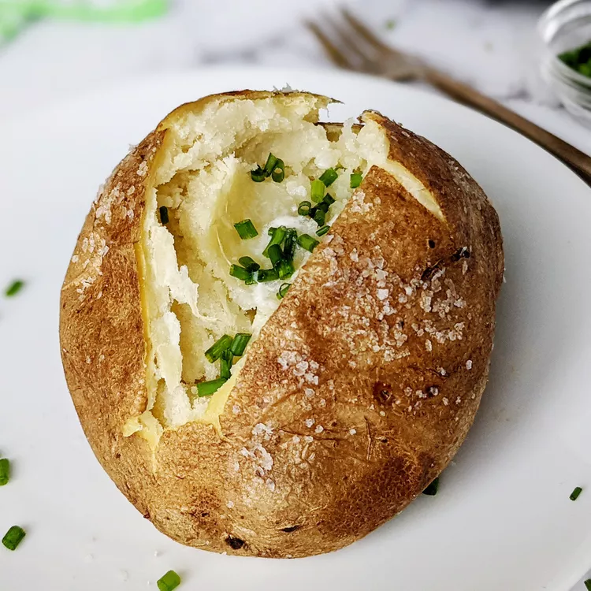

Baked Potatoes

Description
A baked potato, known in some parts of the United Kingdom as a jacket potato,
is a preparation of potato
Ingredients
-
1 medium baking potato
-
1 teaspoon olive oil
-
½ teaspoo1 teaspoon olive oiln salt
-
1 pinch freshly ground black pepper
-
¼ cup shredded Cheddar cheese
Instructions
-
Preheat the oven to 300 degrees F (150 degrees C). Scrub the potato, \
and pierce the skin several times with a knife or fork. Rub the skin with olive oil,
then with salt.
-
Place the potato in the preheated oven, and bake until slightly soft and golden brown,
about 90 minutes. Slice the potato down the center, and serve with butter and black pepper.
Sprinkle shredded Cheddar cheese over the top, if desired.